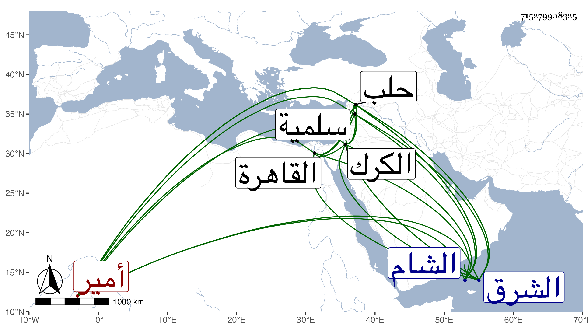

0902Sakhawi.DawLamic.ITO20230111-ara1.EIS1600.715279908325
Biography ID: 715279908325
865
نعير بنون ومهملة مصغر واسمه محمد بن حيار بمهملة مكسورة ثم تحتانية خفيفة بن مهنا بن عيسى بن مهنا بن مانع بن حديثة شمس الدين أمير آل فضل بالشام ويعرف بنعير . ولي الإمرة بعد أبيه ودخل القاهرة مع يلبغا الناصري ولما عاد الظاهر من الكرك وافق نعير منطاشا في الفتنة الشهيرة وكان معه لما حاصر حلب ثم راسل نعير نائب حلب إذ ذاك كمشبغا في الصلح وسلمه منطاش ثم غضب برقوق على نعير وطرده من البلاد فأغار نعير على بني عمه الذين قرروا بعده وطردهم فلما مات برقوق أعيد نعير إلى إمرته ثم كان ممن استنجد به دمرداش لما قدم اللنكية فحضر بطائفة من العرب فلما علم أنه لا طاقة له بهم نزح إلى الشرق فلما نزح التتار رجع نعير إلى سلمية ثم كان ممن حاصر دمرداش بحلب ثم جرت بينه وبين الأمير جكم وقعة فكسر نعير ونهب وجيء به إلى حلب فقتل في شوال سنة ثمان وقد نيف على السبعين وكان شجاعا جوادا مهيبا إلا أنه كثير الغدر والفساد بموته انكسرت شوكة آل مهنا وكان الظاهر خدعه ووعده حتى تسلم منطاش وغدر به ولم يف له الظاهر بما وعده بل جعل يعد ذلك عليه ذنبا ، وولي بعده ولده العجل ، ذكره شيخنا في إنبائه ، وهو في المقريزي مطول . وينظر محمد بن حيار من التاريخ الكبير .
